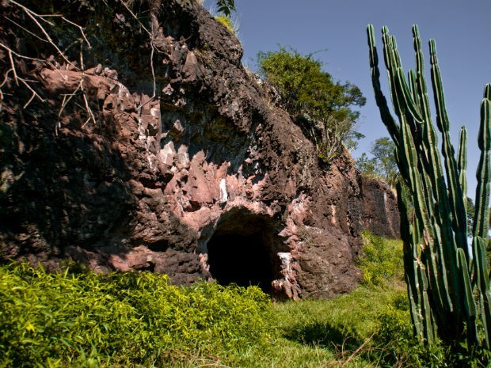

Espeleologia é a ciência que estuda as cavidades naturais e outros fenômenos presentes em um sistema cárstico. A etimologia da palvra 'espeleologia' provém do latim spelaeum.
A espeleologia é uma ciência multidisciplinar, sendo principalmente estudada no âmbito da geologia, biologia, geografia, arqueologia, química, e climatologia.
É comum a referência ao termo "espeleologia" a se referir à atividade científica praticada em cavernas, e o termo "caving" à progressão de cavernas como esporte. No entanto ambas as atividades estão intensamente inter-ligadas, sendo então considerado por muitos como uma prática esporte-científica.
A grande maioria das cavernas são formadas devido à ação da água (da chuva, principalmente) sobre a rocha presente no local. A água da chuva em contato com a o CO2 da atmosfera e do CO2 proviniente da ação de decomposição da matéria orgânica no solo se torna naturalmente ácida. Essa água com teor de ácido carbônico em solução é então capaz de dissolver certos tipos de rocha, como o calcário, em um processo que leva milhares de anos. As cavernas formadas sob esse processo de dissolução química são chamadas de cavernas cársticas, e atraem turístas em todo o mundo devido à beleza única das suas ornamentações, contendo estalactites, cortinas, chão-de-estrela e outros espeleotemas.
Por Sistema Cárstico compreende-se os processos envolvidos na dissolução química da rocha. Portanto as cavernas cártiscas são formadas através da dissolução mineral da rocha através da água percolante rica em ácidos naturais, o principal o ácido carbônico.
Algumas rochas devido a sua composição química são mais facilmente dissolvidas do que outras, as principais rochas "carstificáveis" são o calcário, o dolomito e o mármore.
A formação do Carste acontece quando a água da chuva se enriquece de C02 (presente no ar e no solo) dando origem ao ácido carbônico. A solução de água + ácido carbônico percola pela rocha. A água rica em ácido carbônico (H2CO3) reage com o carbonato de cálcio (CaCO3) da rocha, dissolvendo esse material e transportando-o. Através desse processo de dissolução as pequenas fraturas pré-existentes se alargam cada vez mais iniciando o processo onde se formam as cavernas.
Após o contínuo processo de dissolução da rocha, a água então se torna saturada em carbonato de cálcio (CaCO3) e quando há um aumento na temperatura dessa água não é mais possível manter todo esse material em solução e parte dele se precepita, iniciando o processo de formação dos espeleotemas.
São todas as cavidades naturais com ligação ao exterior e que possui dimensões que permitem a passagem de um ser-humano. As cavernas cársticas são formadas através da dissolução química da rocha.
A água da chuva em contato com a matéria orgânica do solo gera o ácido carbônico, descrito pela seguinte fórmula química:
H2O + CO2 → H2CO3
O ácido carbônico em contato com a rocha retira o carbonato de cálcio presente na rocha e o transporta na forma de bicabornato de cálcio em solução com água.
H2CO3 + CaCO3 - Ca(HCO3)2
As cavernas podem possuir rios e lagos subterrâneos, podem se desenvolver predominantemente horizontal ou vertical, pode possuir salões com muitos metros de altura assim como túneis extremamente baixos e estreitos.
São depressões em formato circular formados pela dissolução da rocha, o diâmetro de algumas dolinas chegam a dezenas de metros. As dolinas podem ser divididas em dois grandes grupos. As dolinas de dissolução representam uma concavidade no solo, formado pela lenta dissolução da rocha logo abaixo do solo. As dolinas de Colapso são formadas também pela dissolução da rocha, porém sofreram um abatimento de blocos, quando a rocha parcialmente dissolvida não suportou o peso acima e desmonorou. Algumas cavernas têm uma dolina como forma de acesso.
Formam "pontas" e "sulcos" devido à dissolução parcial da rocha. Muitos lapiás são bastante afiados podendo causar cortes. Andar sobre essas formações requer bastante cuidado.
É o nome genérico dado a todas as formações rochosas típicas de cavernas. Há centenas de formas de espeleotemas, algumas relativamente comuns (como estalactites e estalagmites) e outras bastantes raras. Os espeleotemas são formados através do processo inverso ao da formação da caverna, ou seja, pela cristalização dos elementos químicos presentes na água que realizaram o processo de dissolvição química da rocha. Os principais minerais formadores de espeleotemas são a calcita, a aragonita e a gipsita.
É um espeleotema formado no teto da caverna em direção ao chão. Apresenta forma tubular. É formado através da cristalização mineral durante o gotejamento da água.
É um espeleotema semelhante à estalactite, porém tem seu cresciemento no sentido inverso, ou seja, do chão ao teto. Se forma através da cristalização mineral após o gotejamento da água no chão.
É um espeleotema que pode medir de alguns milímetros a vários metros. Formam "buracos" na rocha, alguns cabem um ser-humano dentro.
São chamadas de cavernas não-cárstica todas aquelas que são formadas por outros processos que não sejam a dissolução química da rocha. Esse tipo de caverna pode ocorrer nos mais variados ambientes e pelos mais variados motivos. O termo "não-cárstico" é uma definição genérica a esses tipos de formações, essas cavernas também podem ser classificadas de acordo com sua formação mais específica se assim preferir, portanto dentro do grupo das cavernas não-cárstica temos as cavernas vulcânicas, cavernas de gelo, cavernas marinhas, cavernas de coral, dentre outras.
A imagem mostra a gruta "Casa de Pedra" no estado do Paraná. Essa caverna é testemunho de um conduto vulcânico hoje inativo.
O espaço subterrâneo se caracteriza por salões e túneis interconectados. A temperatura tende a ser constante e a umidade relativa do ar alta. A característica mais marcante é ausência total de luz, fator predominante importância na evolução biológica dos seres que habitam esse ambiente.
São considerados seres cavernícolas os que vivem pelo menos parte de sua vida no interior de cavidades subterrãneas, e são eles dividos pela seguinte classificação:
{kind=link}
{kind=link}
{kind=link}
{kind=link}
{kind=link}
{kind=link}
{kind=link}
{kind=link}
{kind=link}
{kind=link}
{kind=link}